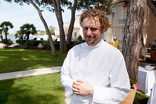
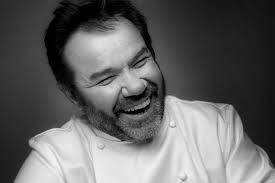
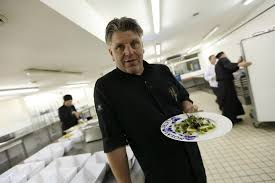
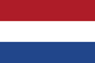
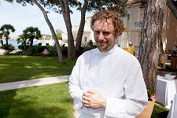
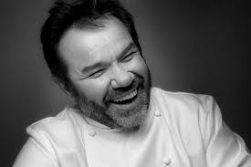
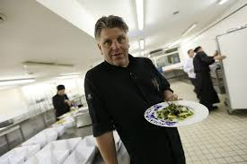
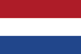

La tabla con los tres mejores chefs del mundo
Los mejores chefs:
| chef | Posición: | País de residencia | |
|  | Arnaud Donckele | 1 | |
|  | Michel Troisgros | 2 | |
|  | Jonnie Boer | 3 |  |
| chef | Posición: | País de residencia | |
|  | Arnaud Donckele | 1 | |
|  | Michel Troisgros | 2 | |
|  | Jonnie Boer | 3 |  |